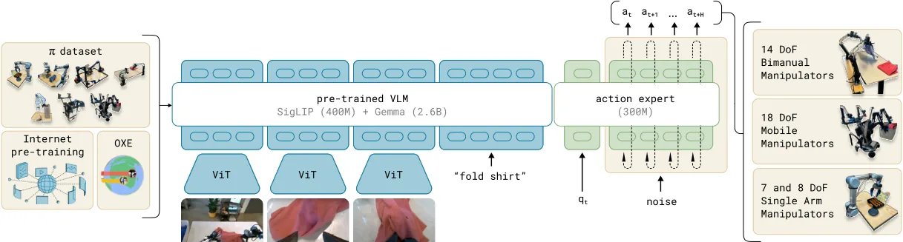
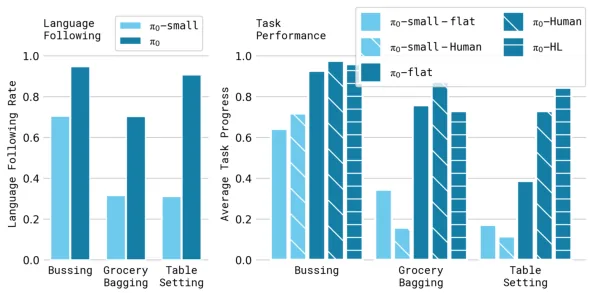
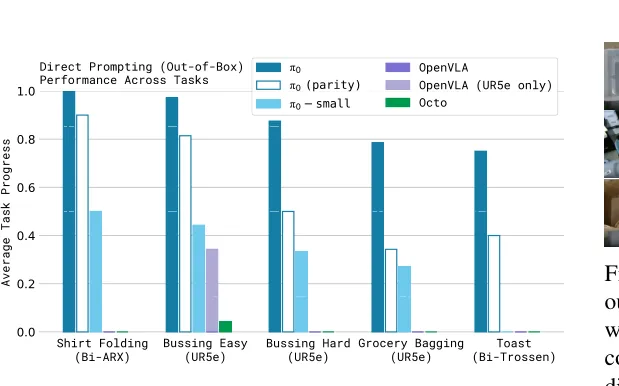
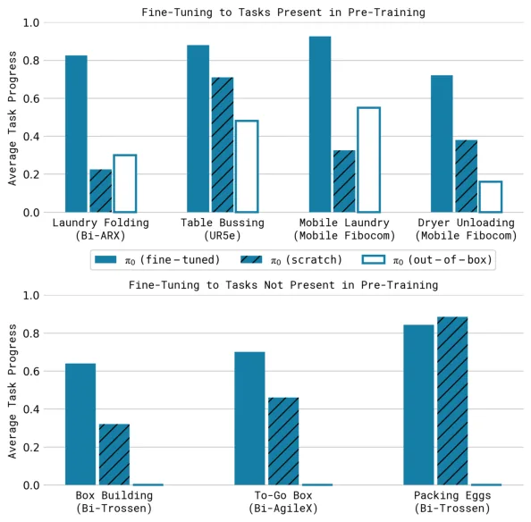

💡速记层 · 思想 / 逻辑 / 方法
默认读完就走的一层——只讲思想、逻辑、方法；效果只作验证。要核对原文/钻细节再看下面的「深读层」。
- 精细灵巧操作（洗衣折叠、装箱）需要高频连续动作分布——autoregressive token 化动作的 VLA 不支持 action chunking，在这类任务上直接失败。
- 但如果完全抛开 VLM、从头训 diffusion policy，就失去了语义理解和语言指令跟随能力——泛化和任务理解都受限。
- 关键设计：把 VLM（SigLIP + Gemma）当前缀 backbone，把动作 token 单独路由给一组独立权重的「动作专家」，用 flow matching loss 监督——两套权重共享同一 transformer forward。
- 训练分两阶段：预训练（大规模多机器人多任务，获得宽泛能力）→ 后训练（高质量任务专属数据，精炼执行策略）——类比 LLM 的 pretrain/RLHF。
- 结果：VLM 的语言跟随能力能被高层策略（另一 VLM）调度，π0 既是低层执行器，也能被当作工具调用。
预训练 π0 在所有 out-of-box 任务上远超 OpenVLA 和 Octo；后训练后能完成 10–20 分钟的长程灵巧任务（洗衣折叠、装箱）——而这些任务其他方法完全无法解决。这验证了「VLM 预训练 + flow matching 动作建模 + 两阶段训练配方」三者缺一不可。
想看具体数字（点开）
- Out-of-box：全量 π0（700k steps）在 shirt folding、bussing easy 等任务得分 ~0.85–1.0，OpenVLA 和 Octo 几乎为 0。
- 语言跟随：π0 的 language following rate 显著优于 π0-small（无 VLM 初始化），后者无法从高层语言指令中获益。
- 后训练复杂任务（Figure 13）：全量 π0 在 laundry folding、box building 等任务得分 0.6–0.85，scratch 版本约 0.2–0.35。
- Parity（160k steps）版 π0 仍优于所有 baseline，说明效益不仅来自算力。
Track A（移动操作 VLA）强相关：π0 是 π0.5 的基础模型，理解 action expert + flow matching 架构是理解后续 Physical Intelligence 系列工作的前提。其「VLM 骨干 + 分离动作专家 + 两段训练」是当前最有影响力的 VLA 范式之一，直接可借鉴。Track B（足式控制）不直接相关——本文涉及的是上肢灵巧操作，不含 locomotion；论文本身也提出「能否扩展到 legged locomotion 仍是未来工作」。故建议作为基础工作深读架构部分。
◆核心观点 · 证据
每条 = 中文论点 + 📍页/节 + 🔤逐字原文(Ctrl-F 锚点) + 🀄译文 + 💡解读。点开原文即可最短路径核对。
our model employs a novel design that fine-tunes a VLM to produce actions via flow matching [32, 28], a variant of diffusion [20, 46]. This allows us to handle high-frequency action chunks [57] (up to 50 Hz) and highly dexterous tasks, which we show pose a major challenge for prior autoregressive VLAs [7].

This design is analogous to a mixture of experts [45, 25, 12, 16] with two mixture elements, where the first element is used for image and text inputs, and the second is used for robotics-specific inputs and outputs. We refer to the second set of weights as the action expert.
PaliGemma is an open-source 3 billion parameter VLM that offers a convenient trade-off between size and performance. We add 300M parameters for the action expert (which is initialized from scratch) for a total of 3.3 billion parameters.
we generate actions by integrating the learned vector field from τ = 0 to τ = 1, starting with random noise A0 t ∼N(0, I). We use the forward Euler integration rule: Aτ+δ t = Aτ t + δvθ(Aτ t , ot), where δ is the integration step size. We use 10 integration steps (corresponding to δ = 0.1) in our experiments.
the diverse (but lower quality) pre-training data allows the model to recover from mistakes and handle highly varied situations, which might not otherwise occur in the high-quality post-training data, while the post-training data teaches the model to perform the task well.
Our recipe mirrors the pre-training/post-training separation commonly seen in exascale language- and image-language models [1, 48], where the model is first pre-trained on a very large and diverse corpus, and then fine-tuned on more narrow and more carefully curated data to induce the desired pattern of behavior — in our case, dexterity, efficiency, and robustness.

the language following accuracy of π0 is significantly better than that of π0-small. This suggests a significant improvement from the larger pre-trained VLM initialization. This capability translates to an improvement in performance with expert human guidance (π0-human) and with high-level model guidance (π0-HL).

The results, shown in Figure 7, show that π0 attains by far the best results across the board on all the out-of-box tasks, with near perfect success rates on shirt folding and the easier bussing tasks, and large improvements over all baselines. The "parity" version of π0, which is trained for only 160k steps, still outperforms all the baselines, and even π0-small outperforms OpenVLA and Octo.

We believe that this level of autonomous performance on such challenging tasks represents a new state of the art in dexterous robot manipulation with learned policies.
To our knowledge, our work demonstrates the longest dexterous tasks in the end-to-end robot learning literature.
we utilize a much larger dataset, with about 10,000 hours of demonstrations, complemented by the open-source OXE dataset [10]. To our knowledge, this represents by far the largest robot learning experiment in terms of the amount of robot data.
it remains to be seen how much positive transfer there is in combining highly diverse data, particularly from different tasks and different robots: although our results suggest that universal pre-trained robot foundation models might become a reality, it is left for future work to understand whether this universality extends to much more distinct domains, such as autonomous driving, navigation, and legged locomotion.
⎘开源状态
论文发布时（2024-10）提供博客/视频；Physical Intelligence 随后在 openpi 仓库开源了代码与预训练权重（Apache-2.0）。
- 代码
- 已开源 github.com/Physical-Intelligence/openpi（Apache-2.0；JAX 实现；包含训练/微调/推理）
- 权重
- 已开源
pi0_base等 checkpoint 已释出；HuggingFace physical-intelligence/pi0 - 数据
- 未公开 ~10k hr 自采操作数据未释出；OXE/Bridge/DROID 子集本就公开
https://physicalintelligence.company/blog/pi0
⚖批判 · 评级
π0 是当前影响力最大的 VLA 架构论文之一：动作专家 + flow matching + 两段式训练的三件套成为后续 π0.5、FAST 等工作的直接基础。10k hr 规模的机器人数据预训练 + 跨本体能力 + 50 Hz 灵巧控制，在论文发表时是显著的技术边界扩展。openpi 开源后可直接微调，社区已有大量下游工作。
① 10k hr 数据绝大多数是 PI 自采且未公开，完整复现受限（虽有开源权重可微调）。② 消融实验不够系统：没有对 flow matching vs. diffusion 步数、action chunk 长度、VLM backbone 大小的完整 sweep。③ 评测指标是「average task progress」而非二元成功率，绝对失败率未完整披露。④ 跨本体实验仍局限在灵巧操作，能否迁移到足式/移动平台的 locomotion 完全未探索。
评级：Breakthrough 确立了 VLA 的重要范式（VLM backbone + action expert + flow matching）并以最大规模数据验证，是后续 PI 工作和社区 VLA 工作的重要参照。